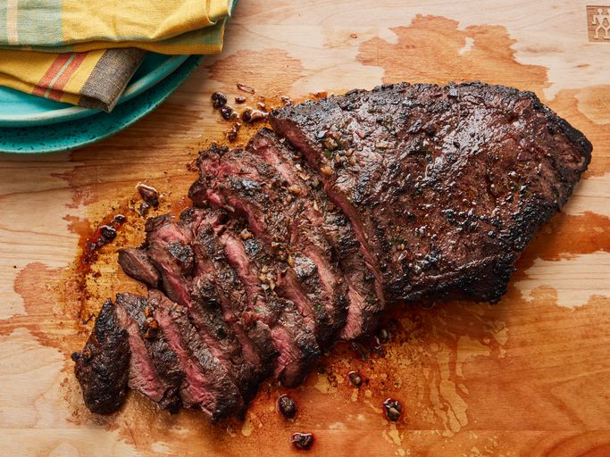

Flat Iron Steak Recipe

Flat iron steak is cut from beef shoulder. To make a flat iron steak, butchers remove the connective tissue to separate the top shoulder blade into two cuts: One is the top blade, the other is the flat iron.
Flat iron steak is nicely marbled and is less expensive than other steaks, which makes it a popular choice among home cooks. When it's cooked correctly, flat iron steak is wonderfully tender and juicy.
Ingredients
- 1 (2 pound) flat iron steak
- 2 1/2 tablespoons olive oil
- 2 cloves garlic, minced
- 1 teaspoon chopped fresh parsley
- 1/4 teaspoon chopped fresh chives
- 1/4 cup cabernet sauvigon (or other dry red wine)
- 1/2 tespoon salt
- 3/4 teaspoon ground black pepper
- 1/4 teaspoon dry mustard powder
Steps
- Place steak inside a large resealable bag. Stir olive oil, garlic, parsley, rosemary, chives, red wine, salt,pepper and mustard powder together in a small bowl.
- pour marinade over steak in the bag. press out as much air as you can and seal the bag. Marinate in tth erefrigerator for 2 to 3 hours.
- Heat a nonstick skillet over medium-high heat. Sear and cook the steak tin the hot skillet for 3 to 4 minutes on each side for medium rare.
- discard the marinade. Allow the steaks to rest for abouit 5 minutes before serving.